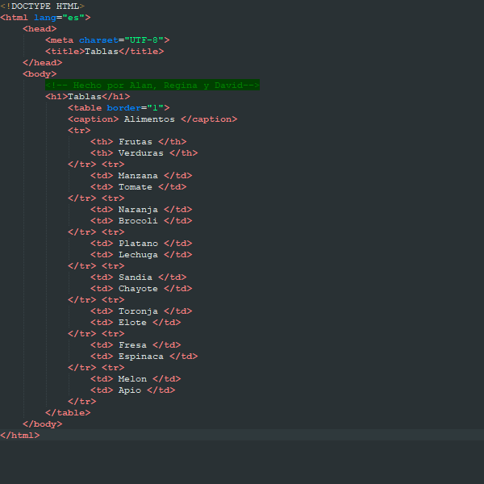
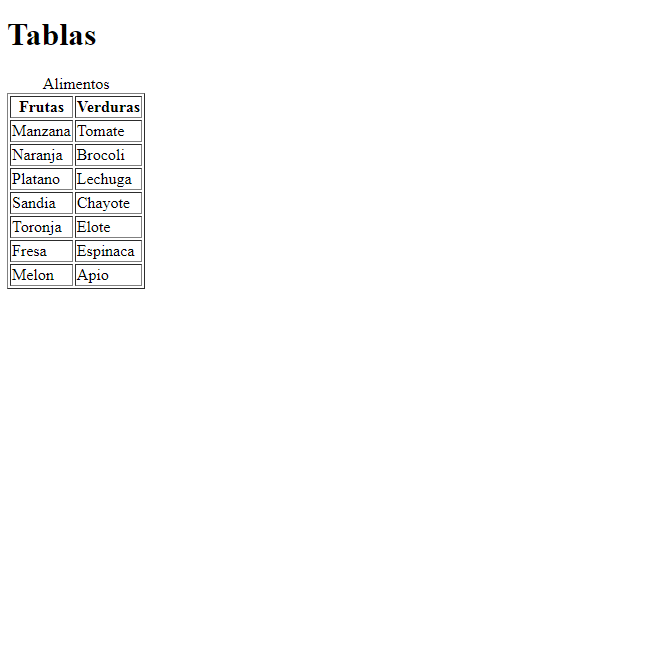
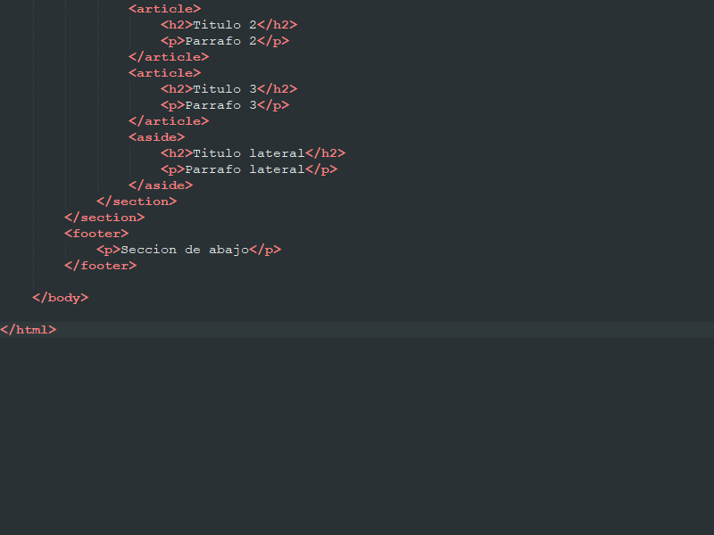
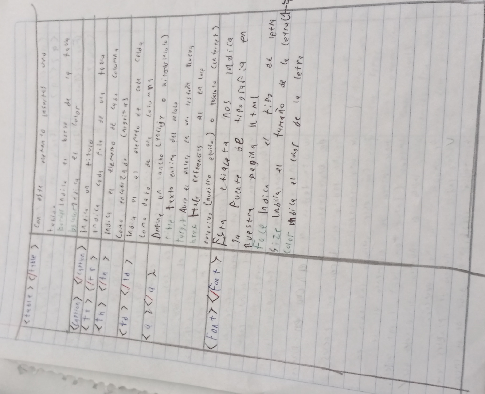

Trabajos de informatica de Alan, Regina y David
Página Web 001
En este trabajo aprendimos todos los tipos de encabezados
Página Web 002
En este trabajo establecemos las variables principales de html
Página Web 003

En este trabajo mostramos los diferentes tipos de texto
Página Web 005
En este trabajo aprendimos a hacer diferentes tipos de listas
Páginas Web 006
 
En este trabajo aprendimos más tipos de texto y a hacer tablas
Página Web 007
En este trabajo aprendimos a hacer nuevos tipos de listas
Página Web 008
En este trabajo aprendimos a insertar imagenes
Página Web 009
En este trabajo aprendimos a posicionar imagenes/elementos
Página Web 012
En este trabajo aprendimos a modificar el tamaño de las imagenes
Página Web 013

En este trabajo recreamos un tablero de ajedrez
Página Web 014
En este trabajo aprendimos a insertar enlaces
Página Web 015
En este trabajo hicimos un formulario con los diferentes tipos de entrada de datos
Página Web 016
En este trabajo hicimos un formulario para un tema en especifico
Página Web 017
En este trabajo dividimos la página en secciones
Página Web 018
En este trabajo cambiamos el color de algunos elementos
Página Web 019
En este trabajo mostramos todas las secciones de la página
Trabajo en cuaderno de Regina
En este trabajo definimos las etapas de la inovación técnica
Trabajo en cuaderno de Regina
En este trabajo aprendimos sobre los diferentes tipos de encuestas
Trabajo en cuaderno de Alan
En este trabajo aprendimos a usar algunas etiquetas de html
Trabajo en cuaderno de Alan
En este trabajo aprendimos a realizar un tutorial con pasos
Trabajo en cuaderno de Alan
En este trabajo hicimos diferentes tipos de fuentes de texto
Trabajo en cuaderno de David
En este trabajo anotamos todas las etiquetas de html
Trabajo en cuaderno de David

En este trabajo anotamos todas las etiquetas de html
Trabajo en cuaderno de David
En este trabajo anotamos todas las etiquetas de html